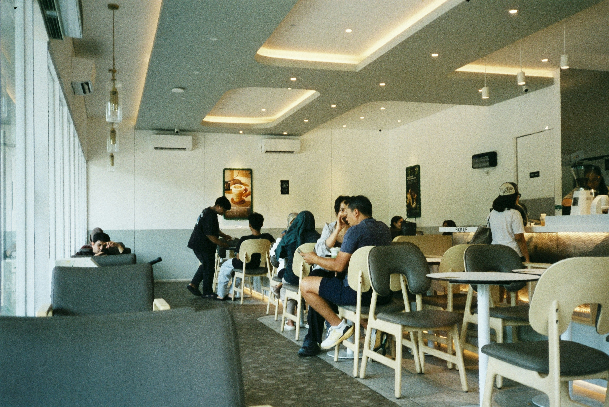

Eating well on a Student Budget
You first year is busy: new classes, new friend, and long days on campus.It is easy to skip meals or spend your whole allowance on milktea.
Eating regular, simple meals helps you focus in class, and you do not
need a big budget yo do it.
Where to Eat Near Campus
You have more option than you think. Here are the usual go-to spots:
- The school canteen for quick rice meal between classes
- Carinderias outside the gate for cheap, filling ulam and rice
- Your own baon from home, which is the cheapest choice of all
- Convenience stores for emergency snacks, not for every meal
How to Plan Your Weekly Food Budget
A little planning on Sunday saves you from being broke by Thursday.
- Check how much allowance you have for the whole week
- Set aside money for fare and school needs first
- Divide what is left by the number of school days
- Pack baon on at least two days to stretch your budget
- Keep a small amount for emergencies, like a surprise project
Quick Tips
Always bring a refillable water bottle. Water station on campus are free, and you will save a lot compared to buying bottled drink every day.

Photo by: Indra Projects
Home
Enrollment Guide